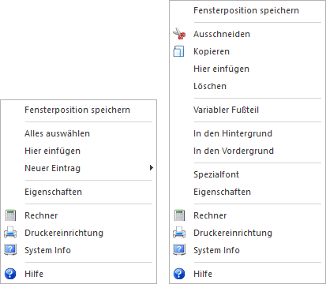
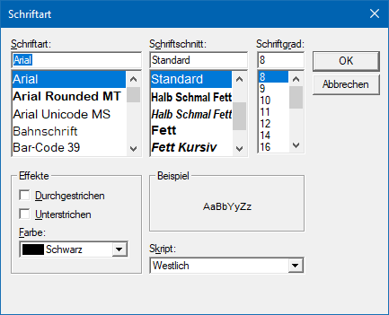

In dem Formular Editor können einige Vorgänge auch über die rechte Maustaste gesteuert werden. Durch Anklicken der rechten Maustaste wird ein sogenanntes Kontextmenü geöffnet, das abhängig vom gerade markierten Element verschiedene Optionen zur Verfügung stellt.
Hinweis
Die folgende Auflistung beschränkt sich auf die Sonderfunktionen des Formular Editor. Eine Übersicht der weiteren Funktionen finden Sie im Kapitel Die rechte Maustaste.

Allgemein
Die folgenden Funktionen stehen u.a. zur Verfügung, wenn kein Element ausgewählt wurde.
Ø Alle auswählen
Mit dieser Funktion werden alle Einträge des aktuellen ausgewählten Formularabschnittes markiert und können in weiterer Folge bearbeitet werden (z.B. Änderung der Schriftart oder dergleichen).
Ø Hier einfügen
Diese Funktion steht nur dann zur Verfügung, wenn vorher ein oder mehrere Elemente kopiert wurden. Durch Anwahl werden die zuvor kopierten Elemente an jener Stelle eingefügt, wo sich der Mauszeiger beim Betätigen der rechten Maustaste befunden hat. Wird nur die Funktion "Einfügen" gewählt (nach dem Kopieren), dann werden die Elemente eine Zeile tiefer und eine Spalte nach rechts versetzt eingefügt.
Ø Neuer Eintrag
Mit dieser Funktion kann ein neuer Eintrag an der Stelle erzeugt werden, wo sich der Mauszeiger befindet.
Ø Eigenschaften
Durch Anwahl der Funktion "Eigenschaft" wird das Fenster Eigenschaften geöffnet, in welchem alle Einstellungen zum aktiven Element vorgenommen werden können. Je nachdem, welcher Typ von Element ausgewählt wurde, stehen andere Einstellungen zur Verfügung. Wurde hingegen kein Element aktiviert, dann werden die Formulareigenschaften selbst angezeigt.
Element
Wenn ein Element ausgewählt ist, stehen u.a. folgende Funktionen zur Verfügung:
Ø Variabler Fußteil
Mit der Funktion "Variabler Fuß" kann für Elemente des Fußbereichs definiert werden, an welcher Position diese gedruckt werden sollen. Hierbei ist es ratsam, wenn alle Elemente mit der gleichen Definition ausgestattet wurden (Funktion aktiviert oder deaktiviert).
ü Funktion aktiviert
Der gesamte
Fußbereich wird entsprechend der Höhe des Mittelteils nach oben angeglichen.
D.h. nachdem das letzte Element im Mittelteil gedruckt wurde, wird direkt der
Fußbereich ausgegeben.
ü Funktion deaktiviert
Der
Fußbereich bleibt an der fixierten Position.
Ø In den Hintergrund
Platziert das markierte Objekt (Variablen, Texte, Rahmen, Linien) in den Hintergrund. Wenn sich zwei Objekte übereinander befinden, wird das markierte Objekt in den Hintergrund gestellt.
Ø In den Vordergrund
Platziert das markierte Objekt (Variablen, Texte, Rahmen, Linien) in den Vordergrund. Wenn sich zwei Objekte übereinander befinden, wird das markierte Objekt in den Vordergrund gestellt.
Spezialfont
Den folgenden Elementen kann ein sogenannter "Spezialfont" zugeordnet werden, d.h. besondere Schriftarten, Farben, etc.:
ü Texte
ü Zahlen
ü Datum
ü Formeln
ü Nachschlag Elementen
Ø Spezialfont
Durch Anwahl dieses Eintrags wird das Fenster "Schriftart" geöffnet. In diesem kann dem Element eine Schriftart, samt Schriftschnitt, Schriftgrad, Effekt und Farbe zugewiesen werden. Hierbei steht alle auf dem Arbeitsplatz installierte Fonts zur Verfügung.
Hinweis
Bei der Aktivierung des Spezialfonts wird im ersten Schritt der aktuelle WinLine-Font als Spezialfont vorgeschlagen.
Eigenschaftsfenster "Schriftart"

Ø Spezialfontfarbe
Sobald ein Spezialfont definiert wurde, steht diese Funktion zur Verfügung. Bei Anwahl wird das Fenster "Farbe" geöffnet, in welchem die Farbe individuell designed werden kann.
Eigenschaftsfenster "Farbe"

Ø Spezialfont entfernen
Sobald ein Spezialfont zugewiesen wurde, steht die Funktion "Spezialfont entfernen" zur Verfügung. Hierüber wird der gewählte Font entfernt.